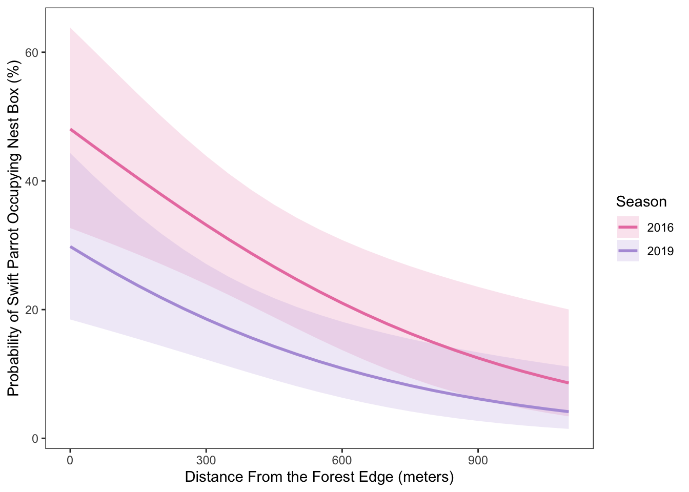

library(tidyverse) #load in tidyverse
library(dplyr) # load in dplyr
library(lubridate) #load in lubridate
library(forcats) # load in forcats
library(tibble) # load in tibble
library(DHARMa) #load in DHARMa
library(MuMIn) #load in MuMIn
library(ggeffects) #load in ggeffects
library(janitor) #load in janitor
sst <- read.csv(here::here("data", "SST_update2023.csv")) #create initial object sst from data, problem 2
nested_boxes <- read.csv(here::here("data", "occdist.csv")) #create initial object nested boxesfor problem 3Final Assignment
https://github.com/liamgilson18/ENVS-193DS_spring-2025_final
Problem 1
a. Transparent Statistical Methods
In part one, I conclude that they are doing a Pearsons correlation test, which is hinted at when it says, ” We reject the null that there is no correlation…” meaning that there is evidence of correlation between head water distance and nitrogen load. I think its more likely to be a Pearsons correlation test because it makes logical sense that the closer we are to the headwater, the less nitrogen. So we would assume that there is a linear relationship, which there is. We also need the data to be continuous and numeric, which is true.
In part two, I conclude that they are doing a One Way Analysis of Variance test, which is hinted at when it says “…between sources (urban land, atmospheric deposition, fertilizer, wastewater treatment, and grasslands)” which means there are more than two groups, with one factor (nitrogen load).
b. More Information Needed
One additional test that should be included is a Tukey HSD test, which is a type of Post Hoc. Tukeys HSD tells us what groups are actually different from each other. For example the Tukey HSD test might tell us there is a significant difference between nitrogen from urban sources and atmospheric depositon, and not a significant difference between nitrogen from fertilizer and grasslands.
Another additional test what should be included is an effect size test (n2), which will explain how much the grouping variable explains the response. An effect size will tell us, for example, if most of the variance is coming from a specific source, such as fertilizer.
c. Suggestions for rewriting
Part 1:
We found a [(strong, medium, weak) (negative,positive) correlation between headwater (km) and annual total nitrogen load (kg year-1) using Pearsons correlation test (Pearsons r= correlation coefficient), such that the distance from headwaters significantly predicts the nitrogen load. (t= t-value, df= degrees of freedom, p=0.03, 95% confidence interval: [lower bound, upper bound], r=correlation coffiecient)
Part 2:
We reject the null hypothesis for the one way ANOVA test, (one-way ANOVA, F(among groups diff, within groups df) = f value, p=0.02, ⍺=significance level) and find that there is no difference in the average nitrogen load (kg year-1) . There was a (small, medium, large) difference (n2 = effect size) between sources (urban land, atmospheric deposition, fertilizer, wastewater treatment, and grasslands). After finding the source means with a 95% confidence interval, we were able to conducted a Tukeys HSD we found significant differences in these sources (source1-source2, difference in means between groups, (lower, upper bound 95% CI, adjusted p-value)
Problem 2
a. Cleaning and Summarizing
sst_clean <- sst |> #cleaning sst, creating object sst_clean
mutate( #Convert date column and extract year and month
date = as.Date(date), # format for date
year = factor(year(date)), # extract year as an intiger
month = factor(month(date, label = TRUE, abbr = TRUE), #read in month as "feb" or "Dec"
levels = month.abb, ordered = TRUE) # use month.abb
) |> #pipe command
group_by(year, month) |> # Group by year and month, pipe command
summarise(mean_monthly_sst = mean(temp, na.rm = TRUE), .groups = "drop") |> #clalculate mean temp and drop groups after. pipe command
as_tibble() # Step 4: Convert to tibble
sst_clean |> slice_sample(n = 5) # Show 5 random rows# A tibble: 5 × 3
year month mean_monthly_sst
<fct> <ord> <dbl>
1 2015 Jul 18.4
2 2022 Jul 17.0
3 2013 Apr 13.2
4 2023 Jan 14.0
5 2001 Dec 13.2str(sst_clean) # Show structure of the tibble intibble [504 × 3] (S3: tbl_df/tbl/data.frame)
$ year : Factor w/ 42 levels "1982","1983",..: 1 1 1 1 1 1 1 1 1 1 ...
$ month : Ord.factor w/ 12 levels "Jan"<"Feb"<"Mar"<..: 1 2 3 4 5 6 7 8 9 10 ...
$ mean_monthly_sst: num [1:504] 13.1 13.5 13.3 12.9 14.4 ...b.
sst_filtered <- sst_clean |> # making object sst_filtered from sst_clean. pipe operator
filter(as.numeric(as.character(year)) %in% 2018:2023)# Filter for years 2018–2023
blue_gradient <- c(
"2018" = "#c6dbef",
"2019" = "#9ecae1",
"2020" = "#6baed6",#blue gradient.
"2021" = "#4292c6",
"2022" = "#2171b5",
"2023" = "#084594"
)
ggplot(sst_filtered, aes(x = month, y = mean_monthly_sst, color = year, group = year)) + #skeleton of our plot made from sst_filtered. setting up axis labels and groups
geom_point(size = 2) + #making point size 2
geom_line(linewidth = 1) + #line width smaller than point so we can see the points
labs( #labs let us title things
x = "Month", #x axis title
y = "Mean monthly sea surface temperature (°C)", # y axis title
color = "Year" #legend title
) +
theme_minimal(base_size = 14) +#set theme minimal and font size
theme(
panel.grid = element_blank(), # no grid
axis.ticks = element_blank(), #no axis ticks
axis.line = element_blank(), #no axis lines
legend.position = c(0.05, 0.95), #legend position in the top left
legend.justification = c("left", "top"), #legend position in the tiop left
legend.title = element_text(size = 10), # font size for legend title
legend.text = element_text(size = 8),#font size for legend text
plot.title = element_text(size = 14, face = "bold"),#bold
plot.title.position = "plot", #irrelevant, we have no title
legend.background = element_rect(fill = "white", color = NA),#make legend float
panel.border = element_rect(color = "black", fill = NA, linewidth = 0.5),#panel color and width
plot.margin = margin(10, 10, 10, 10)#set margins
) +
scale_color_manual(values = blue_gradient) + # gradient
coord_cartesian(clip = "off")Problem 3
a. Response Variable
The 1’s and 0’s are a binary data, where 1 means that the specific bird did occupy the box more than once, and 0 if it did not. For each data entry, the accounted for birds are Swift Parrot, Common Starling, and Tree Martin.
b. Purpose of Study
The difference is that the Swift Parrot is a target species and the Common Sterling and Tree Martin are non-target species. The nested boxes are made to help the endangered Swift Parrot breed, without inviting rival species such as the Common Sterling and Tree Martin.
c. Difference in “Seasons”
The authors are talking about comparing breeding seasons between 2016 and 2019, where the breeding season is summertime, during mast flowering events. In 2016 these boxes are brand new, and by 2019 they are 3 years old and are established nested boxes.
d. Table of Models
| Model number | Season | Distance from Forest Edge | Predictor list |
|---|---|---|---|
| 1 | null model (no predictors) | ||
| 2 | x | x | saturated model (season & distance) |
| 3 | x | Distance only model | |
| 4 | x | Season only model |
e. Run the Models
clean_nest_boxes <- nested_boxes |> #cleaning nested_boxes
clean_names() |> # clean column names
select(sp, edge_distance, season) |> # show columns
mutate(season = as.factor(season)) # make season a factor and not numeric
model1 <- glm(sp ~ 1, # null model, formula with no predictors
data = clean_nest_boxes, # use hidden cleaned data frame
family = binomial) # swift parrot occupancy is binary
model2 <- glm(sp ~ edge_distance + season, #saturated model, use both predictors
data = clean_nest_boxes, # use cleaned data frame
family = binomial) # swift parrot occupancy is binary
model3 <- glm(sp ~ season, # use only season predictor
data = clean_nest_boxes, # use cleaned data frame
family = binomial) # swift parrot occupancy is binary
model4 <- glm(sp ~ edge_distance, # use only edge distance predictor
data = clean_nest_boxes, # use cleaned data frame
family = binomial) # swift parrot occupancy is binary~ season, family = binomial, data = nested_boxes) # season only modelf. Check the Diagnostics
plot(simulateResiduals(model1)) # diagnostics for null model
plot(simulateResiduals(model2)) # diagnostics for saturated model
plot(simulateResiduals(model3)) # diagnostics for season predictor only model
plot(simulateResiduals(model4)) # diagnostics for forest distance only model
g. Select the Best Model
model_selection <- AICc(model1, model2, model3, model4) |> # Compare AIC values
arrange(AICc) #arrange them in descending order
model_selection#View in terminal df AICc
model2 3 226.3133
model4 2 229.6716
model3 2 236.3744
model1 1 238.8318The best model as determined by Akaike’s Information Criterion (AIC) is the model including both distance and mating season.
h. Visualizing the Model Predictions
sp_preds <- ggpredict( #running ggpredict
model2, # choose which model to use
terms = c("edge_distance","season")) # select both distance and season as predictors
sp_preds_clean <- sp_preds |> #new object sp_preds_clean from sp_preds
clean_names() |> # clean column names
rename(season = group) #reneame
ggplot(sp_preds_clean, aes(x = x, # create plot and define axis as probability and distance from forest edge
y = predicted * 100, # y axis is predicted probability x 100 for percentage
color = season, # color by year
fill = season)) + # fill color by year
geom_ribbon(alpha = 0.2, color = NA,
aes(ymin = conf_low * 100, # confidence interval boundary, adjusted for %
ymax = conf_high * 100, # confidence interval boundary, adjusted for %
fill = season
)) +
geom_line(size = 1) + # add line for predictions
labs(
x = "Distance From the Forest Edge (meters)", # set x axis
y = "Probability of Swift Parrot Occupying Nest Box (%)", # set y axis
color = "Season", # set legend title
fill = "Season" # set legend title
) +
scale_color_manual(values = c( # set colors for lines and points
"2016" = "#EA80B0", #light pink
"2019" = "#B39DDB")) + #light purple
scale_fill_manual(values = c( # set colors for CI ribbon
"2016" = "#EA80B0", #light pink
"2019" = "#B39DDB")) + #light purple
theme_bw() + # set theme
theme( # remove background and panel grids
panel.background = element_blank(),
panel.grid = element_blank()
)
i.
[Figure 1]: Swift Parrot box occupancy decreases with seasonal progression, and increases with distance from edge of forest - This figure illustrates the predicted probability of Swift Parrot nest box occupancy, based on a generalized linear model. The pink and purple lines represent the predicted probability that a Parrot will occupy a box for the 2016 and 2019 seasons, respectively, across different distances from the forest edge. The shaded ribbons show a 95% confidence interval for each prediction line, that being pink for 2016, purple for 2019. The plot reveals a negative, nonlinear relationship between distance from the forest edge and occupancy probability, with 2016 showing consistently higher predicted occupancy than 2019. Data from Stojanovic et al. (2021), Dryad: https://doi.org/10.5061/dryad.83bk3j9sb.
j. Calculate Model Predictions
sp_preds_j <- ggpredict( #run predicted values
model2, #from model 2
terms = c("edge_distance [0,900]", "season") #at 0 distance and 900 distance
)
print(sp_preds_j) # show output on render# Predicted probabilities of sp
season: 2016
edge_distance | Predicted | 95% CI
--------------------------------------
0 | 0.48 | 0.33, 0.64
900 | 0.12 | 0.06, 0.24
season: 2019
edge_distance | Predicted | 95% CI
--------------------------------------
0 | 0.30 | 0.18, 0.44
900 | 0.06 | 0.03, 0.13k. Interpret your results
In 2016, shortly after new nest boxes were installed, the probability of Swift Parrot occupancy was estimated at 48% (95% CI: 33%–66%) at the forest edge (0 meters) and 12% (95% CI: 6%–24%) at 900 meters into the forest. By 2019, those probabilities had declined to 30% (95% CI: 18%–44%) at the edge and 6% (95% CI: 3%–13%) deeper in the forest. This suggests a general decline in occupancy over time at both distances. Figure 1 illustrates a negative nonlinear relationship between distance from the forest edge and Swift Parrot occupancy—parrots are less likely to use boxes farther from the edge. A similar pattern was observed for common starlings, while tree martins showed the opposite trend, with occupancy increasing further into the forest. The decline in Swift Parrot use over time may be partly due to increased competition from starlings, which tend to occupy boxes more in later years. Additionally, the rise in tree martin occupancy deeper in the forest may explain the lower availability of boxes for Swift Parrots in those areas.
Problem 4
a. Comparing Visualizations
My visualizations are different from each other significantly. Whereas my homework 2 visualization were pure data, in the form of a histogram and box plot, my homework 3 visualization had an artistic component, where I displayed each week of the quarter as a different slice of pizza. This way, its more pleasing visually, and you can see that each week i took a bigger or smaller ‘slice’ out of my savings account when I eat out.
There definitely are similarities, In my affective visualization, I still used a version of a pie chart, which I see as a simple graph like the histogram and box plot. In this sense, what I was displaying was very simple, and modeled after elementary graphs.
In my first visualization, I can see that when I eat out, I tend to spend much more money when I go to Deja Vu. In my second visualization, I can see a trend in my average spending for the “snack category, which is skewed left, with the median pushed to the left of the entire range, hinting that when I get snacks, I sometimes spend a lot, but usually don’t. In my third visualization I can see that the general trend over all the weeks of the spring quarter, that I did in fact spend more money in the later weeks of the quarter.
My feedback from week 9 was to make the separation of the pieces of pizza cleaner, because originally it was just lines generated in google drawings, and my second was to make the slices of pie accurate to my data, which it originally was not. I implemented the second change, for which i made a pie chart of my data, and then projected those lines onto my picture of pizza.